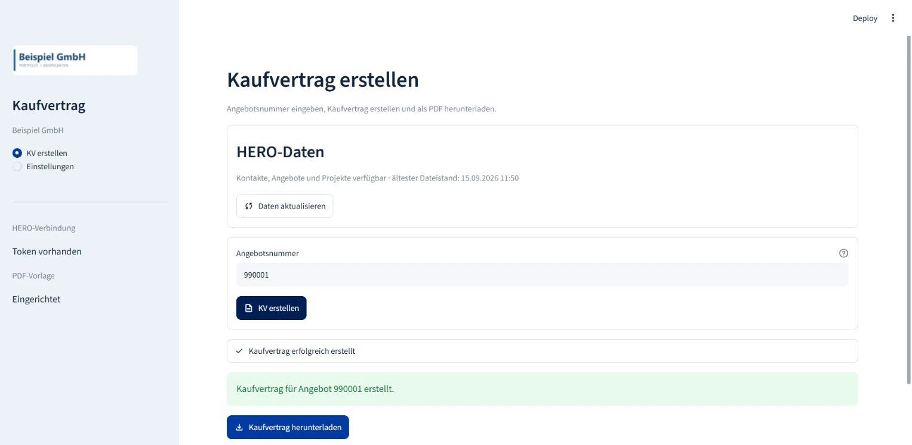

Apps & Automationen
PDF-Kaufverträge aus Angebotsdaten vorbereiten
Die Anwendung übernimmt Kunden-, Projekt- und Komponentendaten aus Angebot und Geschäftssystem in einen ausfüllbaren PDF-Kaufvertrag. Offene Angaben sowie Preis- und Leistungsfelder bleiben zur Ergänzung und Endkontrolle.
Weniger wiederholte Feldübertragung: Ein teilweise ausgefüllter Vertrag verkürzt die Vorbereitung, während Ergänzung und Endkontrolle im Arbeitsablauf bleiben.

Die Grafik lässt sich auf kleinen Bildschirmen seitlich verschieben.
Vorlage und Ergebnis
gezielt speichern
Die ausfüllbare PDF-Vorlage wird pro Rechner hochgeladen und lokal wiederverwendet. Eine erkannte abweichende Anlagenanschrift wird übertragen; Bankdaten, zweiter Eigentümer sowie Preis- und Leistungsfelder bleiben zur Ergänzung offen.
Vor dem Schreiben prüft die App die benötigten Formularfelder, danach die gespeicherten Feldwerte. Bestehende Verträge bleiben erhalten: Neue Dateien erhalten eine laufende Nummer im konfigurierten Ausgabeordner. Die fachliche Endkontrolle folgt im Dokument.
Ein wiederverwendbarer
Vertragsprozess
Die ausfüllbare Vertragsvorlage enthält AGB; eine externe Rechtsprüfung gehört zur Ausarbeitung des Vertragsprozesses. Datenzuordnung, Feldbefüllung und Ergebnisprüfung verbinden sie mit den vorhandenen Angebotsdaten. Die Vorlage gibt die Struktur vor; die Anwendung bereitet den Einzelfall zur fachlichen Kontrolle vor.
Die lokale Browser-App macht den Ablauf ohne direkte Notebook-Bearbeitung zugänglich. Kunden-, Projekt- und Angebotsdaten werden gezielt aktualisiert; das zugehörige Angebots-PDF wird bei der Erstellung abgerufen. Fehlen zentrale Kontaktangaben, kann der Adressblock des Angebots sie ergänzen. Unvollständige Pflichtangaben und doppelte Angebotsnummern stoppen die Erstellung.